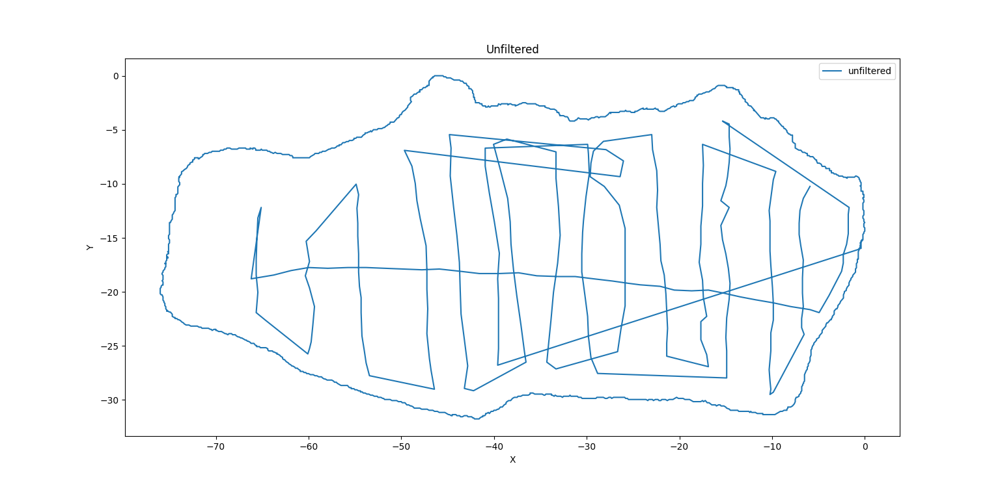
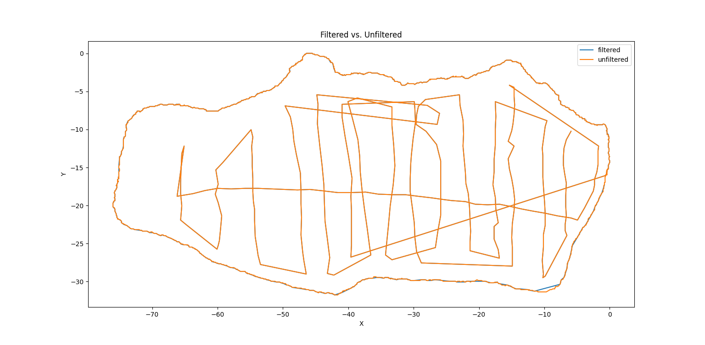
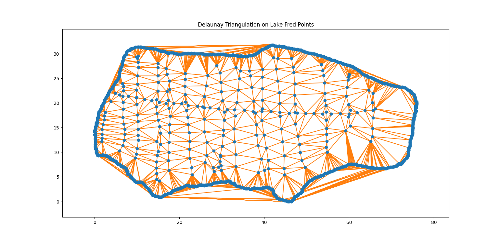
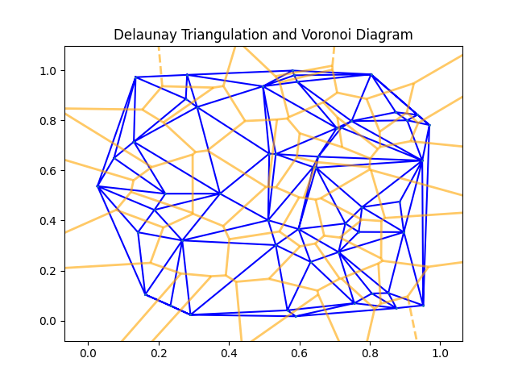
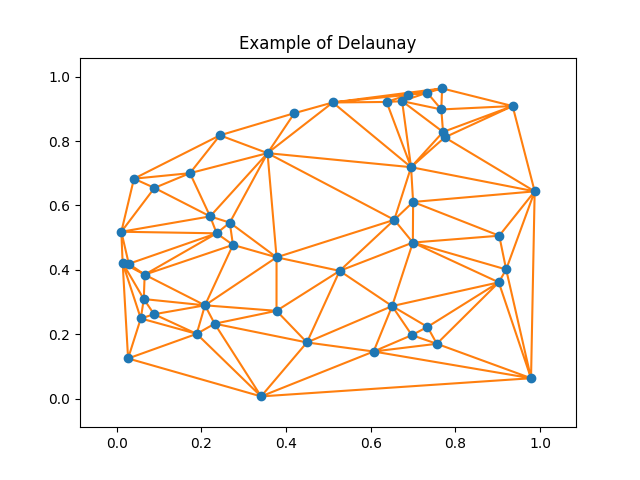

Lake Fred is a prominent feature of Stockton University. Questions about its true size and depth piqued our curiosity, motivating us to embark on an engaging investigation. Our goal was to accurately measure Lake Fred's dimensions. You can read more about our data collection and mathematical techniques used to measure the lake here: Discovering Lake Fred: A Journey Through Advanced Calculus
Using Python, I retrieved the raw data that was collected in a CSV file. I first removed several non_unique x and y values from the data. I then proceeded to scale the data as the distance between two points was incredibly small. This resulted in the the points going from 1771 to 1480 points. This was a removal of 291 points. I then wrote this new data to a new file to be used in the Blender Script that actually creates the model. I did however create several graphs to view changes in the filtered vs non-filtered data.
 The actual triangulation was computed by SciPy's Delaunay Triangulation. Here are the results before the data was put into Blender.
Here is the stand-alone triangulation of the lake that the SciPy Delaunay computed. Raising these points in the third dimension is a simple way to create the triangulation in 3D. This is not always the best way to do it, in this case, it just so happened to be a decent solution.
 The two images above are some experimentations that I performed with the SciPy spatial module. I generated a random set of points and performed 2D Delaunay on the points in the graph titled 'Example of Delaunay'. The graph titled 'Delaunay Triangulation and Voronoi Diagram' was my experimentation with the relation between a Delaunay Triangulation(DT) and the Voronoi diagram. The DT corresponds to the dual graph of the Voronoi diagram.
Trying to 3D printing the model brought with it numerous issues:
Below is the canvas for the Lake Model that is being rendered into your browser using Three.js It is a wonderful JavaScript library that mades putting 3D graphics into a browser very simple. The link to the source code can be found in the navigation bar
QR code this website